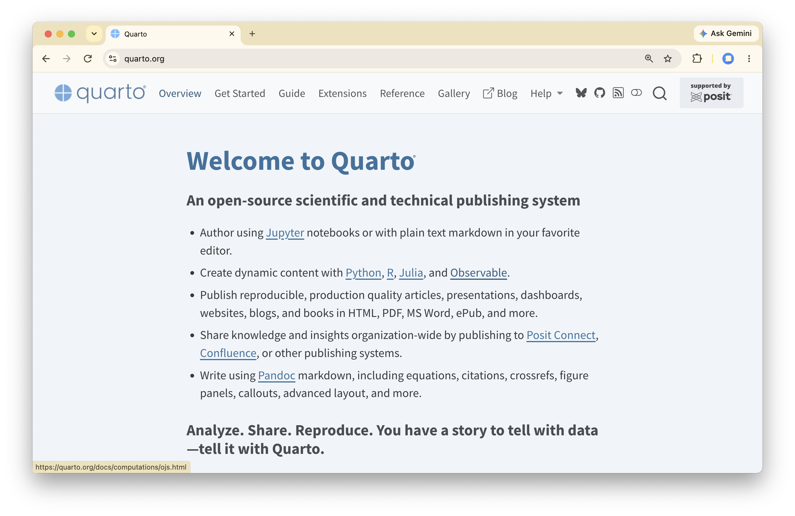

Quarto
An open-source tool for scientific publishing
Last Time
- Two more verbs:
distinct()andcount(). - Chain operations using the pipe operator (
|>). - Debug a pipeline by breaking the pipe and inspecting each stage.
group_by()puts rows into groups for downstream verbs.
Key Ideas for Today
- A Quarto document mixes prose and code in a single
.qmdfile. - Format text using Markdown syntax.
- Embed code cells with options to control evaluation and display.
- Configure the metadata (YAML) to set its format and options.
Quarto at the Command Line
The Plan
Together we will:
- Create a new Quarto document.
- Render it and preview it.
- Add text with Markdown.
- Add code cells.
- Add metadata.
quarto render
Runs all of the code in a .qmd file, formats the text, and renders into a formatted document.
quarto preview
Renders a .qmd file and opens a live preview that automatically re-renders and refreshes whenever the file is saved.
Guess the Metaphor
A Quarto doc is like a spellbook: the incantations (code) are written out next to the explanations of what they do and why (prose), and nothing happens until you cast it.
When you render, every spell runs in order and its effects (tables, figures, results) appear on the page, so anyone with the book can cast the same spells and get the same results.
What is Quarto?
boardwork


Quarto in Positron
Our tools so far:
- File Systems
- Unix Shell
- R (or Python)
- git
- quarto
boardwork
Making a Quarto Doc
Hello Penguins!
Please download hello-penguins.qmd from Ed, put it in a directory on your desktop, then open it as a folder in Positron.
Markdown
- Headers
- Italics
- Bold
- Unorderd list
- Ordered List
- Footnote
- Image
Code Cells
- Begin / End
- Language
- Cell options behind
|#- Evaluate code
- Show code
- Show message
- Show warnings
- Figure size
- Displaying tables
Metadata
- Begin / End
- Common formats
- YAML
Your Turn I
Using the Quarto Guide https://quarto.org/docs/guide/ and the Quarto Reference (https://quarto.org/docs/reference/), do each of the following and then re-render your document.
- Change the theme of your HTML file
- Add a table of contents
- Change format to either
typstorpdf
03:00
Your Turn II
Using the Quarto Guide https://quarto.org/docs/guide/ and the Quarto Reference (https://quarto.org/docs/reference/), do each of the following and then re-render your document.
- Change format to
revealjs - Add a new slide with a bulleted list of your three favorite foods
- Change the transition style
- Bonus: Run
quarto add schochastics/quarto-blackboard-themeat the terminal (say yes to everything) then change format toblackboard-revealjs.
04:00
Key Ideas for Today
- A Quarto document mixes prose and code in a single
.qmdfile. - Format text using Markdown syntax.
- Embed code cells with options to control evaluation and display.
- Configure the metadata (YAML) to set its format and options.
For Next Time
- Project Studio 2 next week!